통신선로산업기사 (2021-03-13 기출문제)
1과목: 디지털전자회로
1. 전원회로에서 부하에 최대전력을 공급하기 위해서는 어떻게 하여야 하는가?
- 전원내부저항과 부하저항이 같아야 한다.
- 전원내부저항보다 부하저항이 커야 한다.
- 전원내부저항보다 부하저항이 작아야 한다.
- 전원내부저항보다 부하저항이 크거나 작아야 한다.
(정답률: 71%)

2. 다음 정류회로에서 직류출력 전압(Vdc)과 직류출력 전류(Idc)는 얼마인가? (단, vi = 141sin377t[V], R = 500[Ω], n1 : n2 = 10 : 1, 다이오드 전압 강하는 없다.)
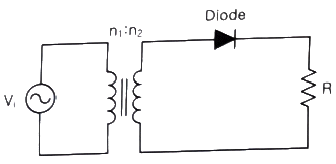
- Vdc = 4.5[V], Idc = 0.9[mA]
- Vdc = 45[V], Idc = 9[mA]
- Vdc = 4.5[V], Idc = 9[mA]
- Vdc = 45[V], Idc = 0.9[mA]
(정답률: 66%)
3. 다음 중 평활회로의 필터에 대한 설명으로 틀린 것은?
- 반파, 전파 정류회로를 통해 출력되는 맥동류의 교번적인 영향을 줄여 거의 일정한 레벨의 직류를 생성한다.
- 정류회로의 출력 성분 중 리플을 제거하기 위해 정류회로 다음 단에 접속한다.
- 커패시터와 인덕터의 조합으로 구성한다.
- 출력직류전압들을 합하여 입력교류전압보다 최소 2배 이상의 정류효과를 생성한다.
(정답률: 75%)
4. 증폭도가 A인 증폭기에 궤환율 β로 정궤환 되었을 경우 발진이 이루어지는 조건은?
- Aβ = 1
- Aβ = 0
- Aβ ＞ 1
- Aβ ＜ 1
(정답률: 80%)
5. 다음 중 궤환 증폭기의 특성에 관한 설명으로 틀린 것은?
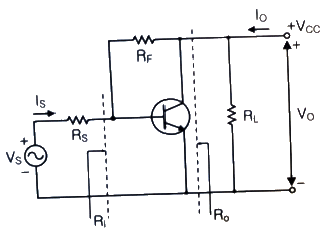
- 궤환으로 입력 임피던스 Rl는 감소한다.
- 궤환으로 출력 임피던스 Ro는 감소한다.
- 궤환으로 전류이득 Io/Is는 감소한다.
- RF가 작을수록 출력전압 VO는 커진다.
(정답률: 82%)
6. 다음 발진기에서 자가 발진을 위한 전압이득 Av의 조건은?
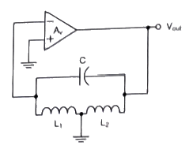
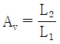
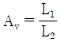
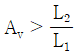
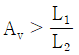
(정답률: 81%)
7. 다음 회로에서 삼각파 입력에 대한 출력의 파형으로 맞는 것은?
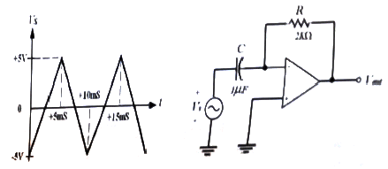
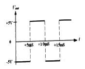
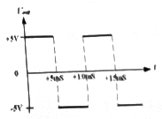
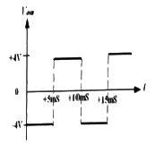
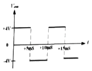
(정답률: 74%)
8. 다음 중 다단 증폭기 출력단에 연결하여 증폭기의 전체 출력저항을 낮추는데 사용하는 회로는?
- 공통드레인 증폭기
- 공통소스 증폭기
- 공통게이트 증폭기
- 공통이미터 증폭기
(정답률: 73%)
9. 다음의 위상 이동 발진기 회로에서 발진이 지속적으로 유지하기 위한 Rf값과 발진기의 출력주파수(Vout)는 약 얼마인가?
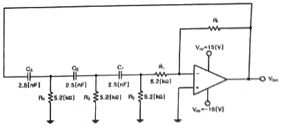
- 15.6[kΩ], 1[kHz]
- 31.2[kΩ], 3[kHz]
- 114.4[kΩ], 4[kHz]
- 150.8[kΩ], 5[kHz]
(정답률: 77%)
10. 다음 중 저주파에서 고주파에 이르기까지 일정한 스펙트럼을 갖고 나타나는 잡음으로 알맞은 것은?
- 트랜지스터 잡음
- 자연 잡음
- 백색 잡음
- 지터 잡음
(정답률: 83%)
11. 다음 중 AM변조방식에서 변조도에 대한 설명으로 틀린 것은?
- 신호파의 최대값을 반송파의 최대값으로 나눈 값이다.
- 반송파의 크기와 신호파의 크기에 따라 정해진다.
- 최대주파수편이와 신호주파수와의 비이다.
- 진폭변화의 정도를 나타낸다.
(정답률: 80%)
12. 900[kHz]의 반송파를 5[kHz]의 신호주파수로 진폭 변조한 경우 피변조파에 나타나는 주파수 성분이 아닌 것은?
- 895[kHz]
- 900[kHz]
- 9⑤[kHz]
- 910[kHz]
(정답률: 84%)
13. 다음 중 변조의 목적이 아닌 것은?
- 안테나의 길이를 줄일 수 있다.
- 잡음 및 간섭의 영향을 적게 받는다.
- 주파수 분할의 다중통신을 할 수 있다.
- 송신 전력을 일정하게 유지할 수 있다.
(정답률: 80%)
14. 다음 중 PCM에서 미약한 신호는 진폭을 크게 하고 진폭이 큰 신호는 진폭을 줄이는 기능을 무엇이라 하는가?
- 프리엠퍼시스(Pre-emphasis)
- 압신(Companding)
- 디엠퍼시스(De-emphasis)
- FM 복조시의 리미팅(Limiting)
(정답률: 84%)
15. 다음 회로에서 입력되는 정현파의 최대 진폭이 6[V]일 때 출력에 나타나는 최대 진폭은? (단, RS = 200[Ω], RL = 400[Ω] 이다.)
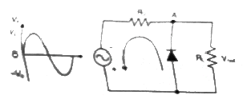
- 2[V]
- 4[V]
- 6[V]
- 8[V]
(정답률: 75%)
16. R-L 직렬 회로에서 시정수(Time Constant) τ는 어떻게 정의되는가?
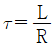
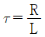
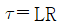
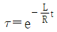
(정답률: 75%)
17. 다음 중 십진수 45를 그레이코드로 바꾼 것은?
- 111011
- 011011
- 110111
- 110011
(정답률: 76%)
18. 다음 진리표의 카르노 맵(Karnaugh Map)을 작성한 것 중 가장 옳은 것은?
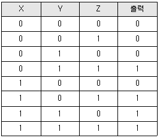
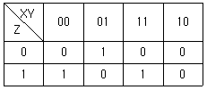
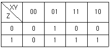
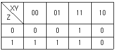
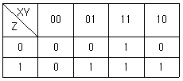
(정답률: 71%)
19. J-K 플립플롭 2개로 동기식 4진 카운터를 설계할 때, 각 플립플롭의 JK 입력 조건을 바르게 나타낸 것은?
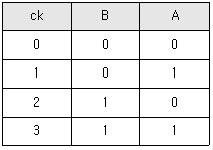
- JA = KA = 1, JB = KB = QA
- JA = KA = 1, JB = QA, KB =
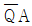
- JA = KA = QB, JB = KB = QA
- JA = QB, KA =
 , JB = QA, KB =
, JB = QA, KB = 
(정답률: 73%)
20. 수신측에 다음과 같은 해밍코드가 수신되었다. 몇 번째 비트에서 에러가 발생되었는가? (단, P는 패리티 비트, D는 데이터 비트이다.)
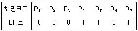
- 3번째
- 5번째
- 6번째
- 7번째
(정답률: 73%)
2과목: 유선통신기기
21. 다음 중 수화기의 임피던스 곡선에 대한 설명으로 옳은 것은?
- 리액턴스와 저항의 벡터 합에 의해 구하며, 원이 작을수록 특성이 좋아진다.
- 리액턴스와 저항의 벡터의 차이에 의해 구하며, 원이 작을수록 특성이 좋아진다.
- 리액턴스와 저항의 벡터의 합에 의해 구하며, 원이 클수록 특성이 좋아진다.
- 리액턴스와 저항의 벡터의 차이에 의해 구하며, 원이 클수록 특성이 좋아진다.
(정답률: 74%)
22. ISDN 가입자 단말기에서 기본 인터페이스인 2B+D의 D가 의미하는 것은?
- 8[kbps] 혹은 16[kbps]의 디지털 신호
- 음성이나 데이터를 위한 채널
- 아날로그 전화채널
- 제어신호를 위한 16[kbps] 혹은 64[kbps]의 디지털 채널
(정답률: 83%)
23. CATV(케이블 TV)에 대한 설명으로 옳지 않은 것은?
- 헤드엔드, 중계 전송망, 가입자 설비 등으로 구성되어 있다.
- 신호는 단방향으로만 전송된다.
- 전송 시스템은 주파수 반할 다중 방식(FEM)을 사용한다.
- 서비스 분해 전송로는 트리형, 링형, 버스형 등을 사용한다.
(정답률: 94%)
24. 수화기의 감도를 결정하는 요소가 아닌 것은?
- 수화기 내의 음압
- 내부 임피던스
- 자속 밀도
- 단자 전압
(정답률: 80%)
25. 다음 중 비디오텍스에 대한 설명으로 잘못된 것은?
- 문자 정보만을 보내는 아스키(ASCII) 비디오텍스나 비디오디스크를 이용한 동영상 제공 비디오텍스도 있다.
- TV 수상기와 전화선을 이용한다.
- 단방향 통신으로 유선통신망을 이용한다.
- 정보 검색이나 메시지 전달도 가능하며 최근에는 전용선을 이용한 사설 비디오텍스도 있다.
(정답률: 89%)
26. TDX-1B 교환기에서 가입자선 정합 모듈(SIM)에 대한 설명으로 옳지 않은 것은?
- 망형은 중계에 의존하지 않고 직접 접속된다.
- 망형은 통화량이 많은 소수의 국 사이를 연결할 때 유리하다.
- 성형은 중계선을 적게 하고 능률을 높이기 위한 망이다.
- 성형은 통화량이 적은 다수의 국 사이를 연결할 때 유리하다.
(정답률: 74%)
27. 전자교환기의 교환점 연결방식에서 시분할 방식(TDS)을 이용하지 않는 교환기는?
- M-10CN ESS
- N0.4 ESS
- TDX-1B ESS
- TDX-10 ESS
(정답률: 69%)
28. 다음 중 전자교환방식에서 시분할방식과 공간분할방식에 대한 설명으로 틀린 것은?
- 공간분할방식은 대용량국 일수록 시분할방식에 비해 유리하다.
- 종합통신망 구성면에서 시분할방식이 공간분할방식보다 유리하다.
- 디지털회로망의 중심부에 위치한 탄뎀국이나 시외국일수록 공간분할방식이 유리하다.
- 시분할방식은 가입자 정합장치가 필요하다.
(정답률: 81%)
29. 북미 표준인 SONET을 기초로 하여, ITU에서 정한 동기식 디지털 다중화 계위(SDH)의 동기 전송모듈(STM) STM-1의 비트 전송속도는?
- 51.840[Mbps]
- 155.520[Mbps]
- 622.080[Mbps]
- 2488.320[Mbps]
(정답률: 70%)
30. 동기식 디지털 계위(SDH)에 대한 설명으로 적합하지 않은 것은?
- 신호 분리 시 필터 사용으로 누화의 영향이 크다.
- 동기용 스위치 회로가 간단하다.
- 다중화 역다중화의 과정이 단순하다.
- ATM 셀 등을 전달하는 전송체계 기반을 제공한다.
(정답률: 65%)
31. 다음 중 전송장치 또는 집선장치에 사용되는 자동이득 조정장치(AGC)의 기능으로 옳지 않은 것은?
- 전송로의 등화도 보정
- 온도 변화에 따른 선로손실 방지
- 전송 주파수 변동을 일정하게 유지
- 입력 레벨 상승에 의한 증폭기의 과부하 방지
(정답률: 52%)
32. 다음 네트워크 장치 중 OSI 참조모델의 최상위 계층에서 동작하는 장치는?
- 라우터
- 브리지
- 게이트웨이
- 리피터
(정답률: 88%)
33. 다음 중 광손실 측정법에 해당되지 않는 것은 무엇인가?
- 삽입법
- 후방산란법
- 흡수법
- 컷백법
(정답률: 80%)
34. 네트워크를 이루는 구성 요소 중 망형(mesh)으로 구성할 때 회선수(n)가 3일 때 중계회선 수는?
- 3
- 4
- 5
- 6
(정답률: 85%)
35. IP 주소로부터 MAC 주소를 얻는 기능은?
- ARP
- RARP
- UDP
- RTP
(정답률: 94%)
36. 허브(Hub)에 대한 특징으로 가장 옳지 않은 것은?
- 설치가 간편하다.
- 연결된 호스트가 많을수록 속도가 느려진다.
- 네트워크 장비 중 분배의 기능을 담당한다.
- 공유 매체의 특성 때문에 트래픽이 적게 발생한다.
(정답률: 85%)
37. 전송로 임피던스가 75[Ω]계인 경우 절대레벨이 0[dBm] 일 때, 전압값은?
- 0.775[mV]
- 1.75[mV]
- 274[mV]
- 132[mV]
(정답률: 64%)
38. 광섬유에서 코어의 굴절률(n1)이 1.43이고, 클래드 굴절률이 1% 작을 때 클래드 굴절률(n2)은 약 얼마인가?
- 1.42
- 2.42
- 3.42
- 4.42
(정답률: 82%)
39. 다음 국간 중계 케이블의 위상정수를 측정하였더니 β = 5×10-3 [ rad/km] 이었다. 각 주파수 ω = 1,200[rad/sec] 일 경우 전파속도  는 얼마인가?
는 얼마인가?
 = 4.2×105 [km/sex]
= 4.2×105 [km/sex] = 2.4×105 [km/sex]
= 2.4×105 [km/sex]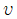
= 3.4×105 [km/sex] = 2.8×105 [km/sex]
= 2.8×105 [km/sex]
(정답률: 56%)
40. 선로의 입력전류가 100[mA]이고, 출력전류가 1[mA] 일 때, 이 선로의 감쇠량[dB]은?
- -10[dB]
- -20[dB]
- -30[dB]
- -40[dB]
(정답률: 67%)
3과목: 전송선로개론
41. 다음 중 선로에 부하가 걸려잇고 부하와 선로사이에 임피던스 정합이 이루어졌을 때의 설명으로 거리가 먼 것은?
- 최대전력 조건이다.
- 투과계수는 0이다.
- 최대전류가 부하에 공급된다.
- 무한장선로와 같이 반사파가 없고 진행파만 존재한다.
(정답률: 81%)
42. 반사계수가 0.1인 전송로의 부정합 감쇠량은 몇 [dB]인가?
- 10
- 20
- 30
- 40
(정답률: 67%)
43. 전송선로의 특성 임피던스와 관계가 없는 것은?
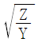
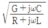
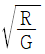
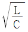
(정답률: 82%)
44. 24CH PCM의 클럭주파수는 1.544[MHz]이다. 표본화 주파수를 8[kHz]로 하면 1CH에 할당되는 시간은 약 얼마인가?
- 125[μs]
- 60[μs]
- 5.2[μs]
- 0.65[μs]
(정답률: 79%)
45. ASCII문자(7bit)를 하나의 시작 비트(Start-bit), 두 개의 정지 비트(Stop-bit), 하나의 패리티 비트(Parity-bit)를 추가하여 전송한다고 할 때, 1200[bps]의 전송속도로 1분에 몇 글자까지 전송 가능한가?
- 325
- 655
- 3255
- 6545
(정답률: 70%)
46. 다음 중 RZ 부호와 NRZ 부호에 대한 설명으로 틀린 것은?
- RZ는 NRZ보다 넓은 주파수 대역을 요한다.
- RZ는 NRZ보다 듀티 사이클(Duty Cycle)이 짧다.
- RZ는 NRZ보다 동기측면에서 유리하다.
- RZ는 NRZ보다 잡음 성능면에서 우수하다.
(정답률: 76%)
47. 다음 중 동축 케이블의 종류가 아닌 것은?
- 표준 동축 케이블
- 세심 동축 케이블
- 해저 동축 케이블
- UTP 케이블
(정답률: 89%)
48. 다음 중 동축케이블의 특성이 아닌 것은?
- 중심 도체저항이 크다.
- 광대역 다중화가 가능하다.
- 전송손실이 적다.
- 고주파 누화특성이 양호하다.
(정답률: 75%)
49. 고속 데이터용 구내배선시스템에 사용되는 케이블은 그 전송대역에 따라 등급을 나누고 있다. 분류가 옳지 않은 것은?
- Category 2, 전송대역 4[MHz]
- Category 3, 전송대역 16[MHz]
- Category 4, 전송대역 50[MHz]
- Category 5, 전송대역 100[MHz]
(정답률: 89%)
50. 광케이블 손실 중 내적인 손실에 속하지 않는 것은 무엇인가?
- 흡수손실
- 레일리(Rayleigh) 산란손실
- 구조불완전에 의한 손실
- 접속손실
(정답률: 79%)
51. 광섬유케이블의 코어의 굴절률이 1.48이라면, 코어내에서 광의 속도는 약 얼마인가? (단, 계산은 소수점 셋째 자리에서 반올림)
- 1.01×108[m/s]
- 2.03×108[m/s]
- 3.01×108[m/s]
- 4.42×108[m/s]
(정답률: 64%)
52. 다음 중 에르븀 첨가 광파이버 증폭기(Erbium-Doped Fiber Amplifier : EDFA)의 특징이 아닌 것은?
- 높은 이득
- 넓은 대역폭
- 낮은 잡음특성
- 무반사성
(정답률: 88%)
53. 손실이 최소가 되는 1550[nm] 파장에서 분산량이 '0'이 되도록 제작한 광섬유의 명칭은 무엇인가?
- 표준 단일모드 광섬유
- 분산천이 광섬유
- 비영분산천이 광섬유
- 편광유지 광섬유
(정답률: 77%)
54. 다음 중 광케이블의 특성에 대한 설명으로 틀린 것은?
- 저손실이므로 장거리 통신에 유리하다.
- 비전도성으로 전기적인 잡음이 적다.
- 충격에 약하고 전송장치가 비싸다.
- 장거리 전송을 위해 멀티모드로 사용한다.
(정답률: 88%)
55. 다음 중 광케이블 포설 시 작업환경이나 지하관로 여건 등을 고려하여야 하는데, 일반적으로 국내에서 사용되고 있는 광케이블 포설공법이 아닌 것은?
- 견인포설공법
- 공압포설공법
- 수압포설공법
- 양방향포설공법
(정답률: 78%)
56. 다음 중 지하선로의 루트 선정조건이 잘못된 것은?
- 유도방해, 전식이 많은 도로
- 선로의 거리가 최단거리인 도로
- 가공케이블의 배선에 편리한 도로
- 하천, 교량 및 철도 횡단이 적은 도로
(정답률: 91%)
57. 통신선로의 구성 중 전화교환국의 케이블(V측)과 기계측(H측)의 분계점이 되는 시설은?
- ADF
- BDF
- IDF
- MDF
(정답률: 74%)
58. 통신케이블에 공기나 가스를 주입하여 관리할 때의 장점으로 거리가 먼 것은?
- 고장의 미연 방지
- 케이블의 저항 감소
- 케이블의 절연 향상
- 케이블의 방습 및 방수
(정답률: 58%)
59. 분기 L형1호의 맨홀에서 관로공수는 얼마인가?
- 4공 이하
- 6공 이하
- 8공 이하
- 9공 이하
(정답률: 83%)
60. 다음 중 시내 전화케이블의 습기 방지를 위한 조치로 적합하지 않은 것은?
- 케이블 제조 시 심선 사이에 절연이 양호한 젤리를 충전하여 습기로부터 예방한다.
- 케이블의 청결을 위하여 매년 정기적으로 인공, 수공 및 케이블 외피를 청소한다.
- 케이블에 건조 공기를 불어 넣는다.
- 케이블에 질소 가스를 불어 넣는다.
(정답률: 79%)
4과목: 전자계산기일반 및 선로설비기준
61. 다음 중 주소 지정 방식에 대한 설명으로 틀린 것은?
- 직접 주소 지정 방식보다 간접 주소 지정의 주소 범위가 더 넓다.
- 간접 주소 지정 방식은 두 번 이상 메모리에 접속해야 실제 데이터를 가져온다.
- 레지스터 간접 주소 지정 방식에서 레지스터 안에 있는 값은 실제 데이터가 있는 곳의 주소를 나타낸다.
- 즉시(또는 즉치) 주소 지정 방식에서 오퍼랜드는 기억장치의 주소 값이다.
(정답률: 85%)
62. 다음 중 4-단계 명령어 파이프라이닝의 올바른 실행 순서는?
- 명령어 인출(IF)-명령어 해독(ID)-오퍼랜드 인출(OF)-실행(EX)
- 오퍼랜드 인출(OF)-실행(EX)-명령어 인출(IF)-명령어 해독(ID)
- 명령어 인출(IF)-실행(EX)-오퍼랜드 인출(OF)-명령어 해독(ID)
- 오퍼랜드 인출(OF)-명령어 해독(ID)-명령어 인출(IF)-실행(EX)
(정답률: 74%)
63. 다음 중 2n개의 입력과 n개의 출력으로 구성되는 것은?
- 인코더
- 디코더
- 멀티플렉서
- 디멀티플렉서
(정답률: 59%)
64. 다음 보기와 같은 기능을 수행하는 것은?
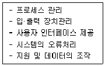
- 하드웨어
- 운영체제
- 응용 프로그램
- 미들웨어
(정답률: 91%)
65. 다음 중 “원하는 시간 내에 시스템을 얼마나 빨리 사용할 수 있는가”의 정도를 나태는 것은 무엇인가?
- 처리능력(Throughput)의 향상
- 응답시간(Turn-Around Time)의 단축
- 사용 가능도(Availability)의 향상
- 신뢰도(Reliability)의 향상
(정답률: 70%)
66. 논리식
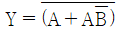
를 간력화 하면?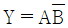
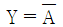
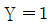
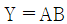
(정답률: 73%)
67. 다음 중 시스템 소프트웨어에 해당하는 것은?
- 문서작성용 소프트웨어
- 그래픽 편집기
- 원도우즈(OS)
- 웹 어플리케이션
(정답률: 89%)
68. 현재 메모리의 분할 상태가 다음과 같을 때 크기가 100K인 작업을 최악적합(Worst Fit) 기법에 의해 할당한다면 어느 위치에 적재되는가?
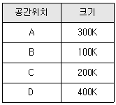
- A
- B
- C
- D
(정답률: 85%)
69. 다음 중 순차 액세스(Sequential Access)만 가능한 보조 기억장치는?
- CD-ROM
- 자기 디스크
- 자기 드럼
- 자기 테이프
(정답률: 72%)
70. 다음 중 비교적 속도가 빠른 I/O 장치를 통해 특정한 하나의 장치를 독점하여 입·출력으로 사용하는 채널은?
- Simple Channel
- Select Channel
- Byte Multiplexer Channel
- Block Multiplexer Channel
(정답률: 83%)
71. 다음 중에서 보허선의 설치방법으로 틀린 것은?
- 가공통신선과 90°를 넘는 각도로 교차하여야 한다.
- 보호선과 가공통신선간의 수직이격거리는 60[cm] 이상으로 한다.
- 보호선이 가공통신의 밖으로 펼쳐지는 길이는 보호선과 가공통신선간 수직거리의 1/2에 상당하는 길이 이상으로 한다.
- 제2종 보호선은 제1종 보호선으로 대체할 수 있으나, 제1종 보호선은 제2종 보호선으로 대체할 수 없다.
(정답률: 95%)
72. 교환설비, 단말장치 등으로부터 수신된 방송통신콘텐츠를 변환, 재생 또는 증폭하여 유선 또는 무선으로 송신하거나 수신하는 설비를 무엇이라 하는가?
- 선로설비
- 전송설비
- 교환설비
- 전원설비
(정답률: 94%)
73. 다음 중 정보통신 공사업자 및 용역업자에게 공사를 도급하는 자를 무엇이라 하는가?
- 하수급자
- 용역업자
- 감리원
- 발주자
(정답률: 86%)
74. 다음 중 통신국사 및 통신기계실의 입지조건으로 옳지 않은 것은?
- 풍수해로부터 영향을 많이 받지 않는 곳이어야 한다.
- 통신국사를 임차하는 경우 내진구조의 건축물은 불필요하다.
- 주변지역의 영향으로 인한 진동발생이 적은 곳이어야 한다.
- 강력한 전자파장해의 우려가 없는 곳이어야 한다.
(정답률: 86%)
75. 다음 중 관로의 매설기준의 알맞지 않는 것은?
- 관로는 다른 매설물과 최대한 가까이 매설한다.
- 관로에 사용하는 관은 외부하중과 토압에 견딜 수 있는 충분한 강도와 내구성을 가져야 한다.
- 관로 상단부에 지면사이에는 관로보호용 경고테이프를 관로 배설경로에 따라 매설하여야 한다.
- 맨홀 또는 핸드홀 간에 매설하는 관로는 케이블 견인에 지장을 주지 아니하는 곡률을 유지하는 등 직선성을 유지하여야 한다.
(정답률: 95%)
76. 가공통신선에 제2종 보호망의 구성으로 옳지 않은 것은?
- 보안접지공사를 한 금속선을 망상으로 할 것
- 세로선은 직경 3.5[mm] 이상의 동복강선 또는 직경 4[mm]의 경동선이나 이와 동등 이상의 강도를 가진 것을 사용할 것
- 가로선은 직경 2.6[mm]의 경동선이나 이와 동등 이상의 강도를 가진 것을 사용할 것
- 병행하는 금속선 상호간의 거리는 각각 2.5[mm]이하로 할 것
(정답률: 56%)
77. 다음 중 정보통신 공사업자의 신고의무에서 폐업신소를 해야 하는 사람에 해당되는 것은?
- 공사업자가 파산한 때에는 그 공사업자
- 법인이 합병 또는 파산 외에 사유로 해산한 때에는 그 청산인
- 공사업자가 사망한 때에는 그 공사업을 상속하는 상속인
- 공사업자의 부도로 인한 폐업 때에는 그 보증인
(정답률: 65%)
78. 다음 구내통신선로섭리에 관한 설명 중 옳지 않은 것은?
- 인입관로상 맨홀은 구내통신선로설비의 맨홀과 공용으로 사용할 수 있다.
- 창고 등과 같이 통신수요가 요구되지 않는 건물도 구내통신선로설비를 갖추어야 한다.
- 주거용 건축물에 설치하는 구내배선은 세대단자함에서 각 인출구까지는 성형배선 방식으로 하여야 한다.
- 인입주로부터 건축물의 최초 접속점까지 최단거리로 설치해야 한다.
(정답률: 62%)
79. 구내에 두 개 이상의 건물이 있는 경우 국선단자함에서 각 건물의 동단자함 또는 동단자함에서 동단자함까지의 건물 간 구간을 연결하는 통신케입르을 무엇이라 하는가?
- 건물간선케이블
- 구내간선케이블
- 수평배선케이블
- 급전선
(정답률: 82%)
80. 다음은 제1종 보호선의 구성에 관한 내용이다. 괄호 안에 들어갈 값을 순서대로 적은 것은?
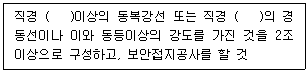
- 2.5[mm], 3[mm]
- 3[mm], 4[mm]
- 3.5[mm], 5[mm]
- 4[mm], 6[mm]
(정답률: 70%)